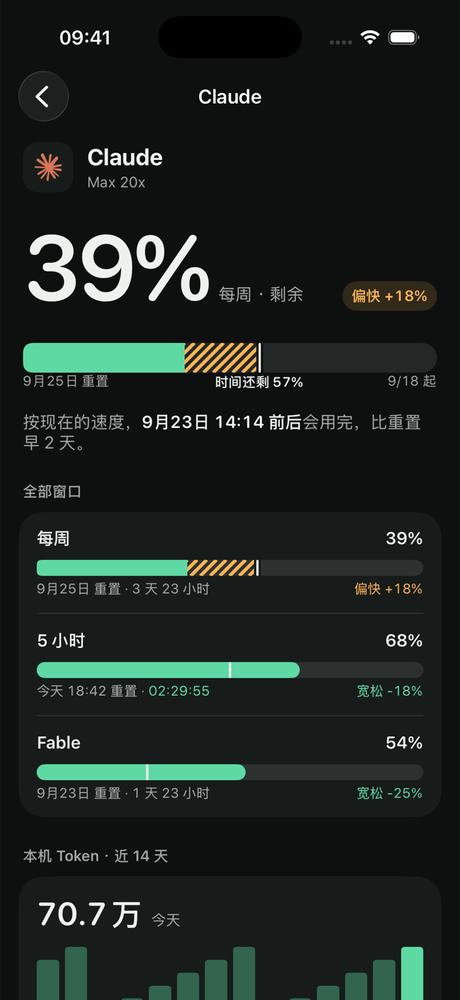
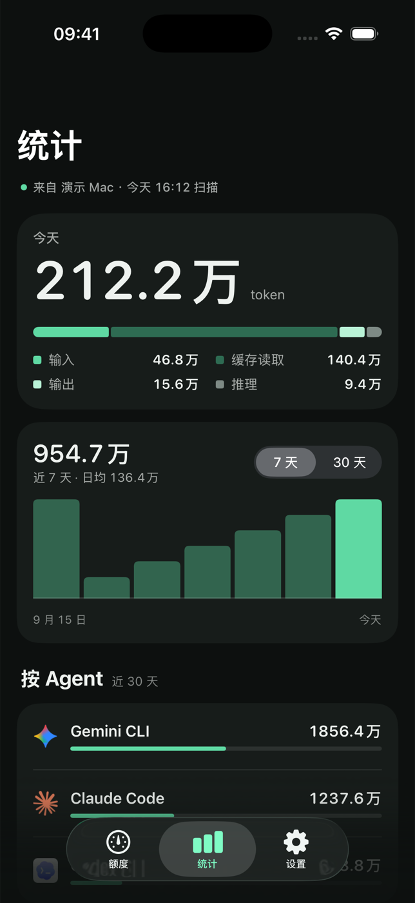
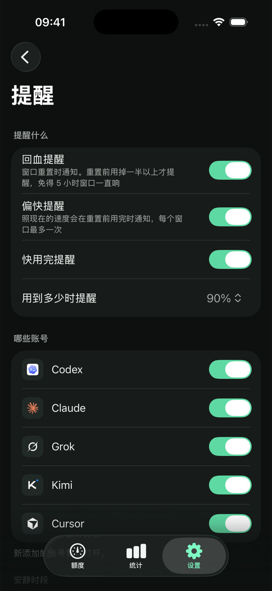

AI 编码额度，一处看全
Claude、Codex、Cursor、Kimi、Grok、DeepSeek 还剩多少、每个窗口什么时候回血、是不是用得比时间还快。在 iPhone、iPad 和 Mac 菜单栏上。
即将上架 App Store


只回答一个问题：还能不能接着用
不是什么都有的仪表盘。读数、重置时间、节奏。
节奏条
每个窗口都把「已用」和「时间过了多少」画在同一条上。用得比时间快就变琥珀色，并告诉你按这个速度什么时候用完。
一条回血时间轴
所有账号排进同一条七天时间轴，按窗口恢复的先后。
菜单栏、小组件、锁屏
最紧张的账号常驻 Mac 菜单栏；iPhone 和 iPad 有主屏幕与锁屏小组件。
Token 统计
Mac 读取本机编码 Agent 的日志，按天、模型、来源汇总 Token。对话内容不会离开你的 Mac。
你自己的 iCloud
账号和读数通过你的 iCloud 私有数据库同步。没有 vibeUsage 服务器，也没有 vibeUsage 账号。
插件
没有内置的服务可以用一段小脚本接入，由你已经在用的 AI 按 App 提供的提示词写出来。
vibeUsage PRO
免费版可以监控 1 个账号。Pro 把所有额度放在一起，并在该注意的时候告诉你。
- 账号数量不限：同一家也能连多个，全部排进一条回血时间轴。
- 提醒：用得偏快、快用完、回血了，各发一条通知，可设安静时段。
- 一次买断：不订阅。同一个 Apple ID 下的 iPhone、iPad、Mac 一起解锁。
始终免费统计、小组件、菜单栏、iCloud 同步、主题，以及已用 / 剩余两种读数。